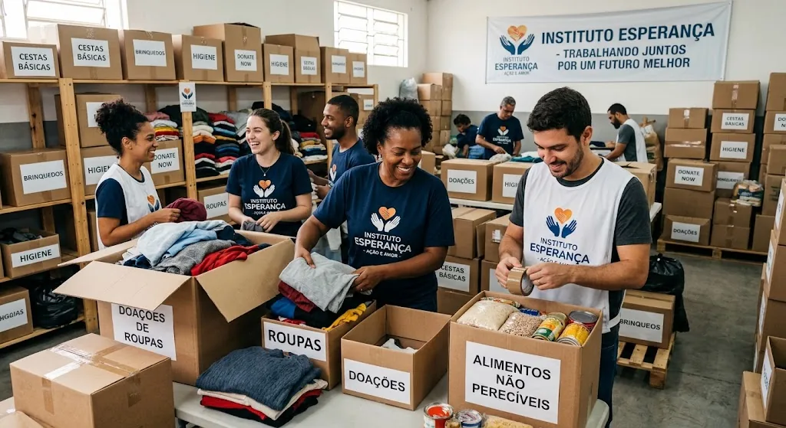

Nossos projetos
Campanhas de doação
DoaçãoArrecadação de alimentos
Arrecadamos alimentos para ajudar famílias em situação de vulnerabilidade social.
Doação de roupas
Recebemos e distribuímos roupas para pessoas e famílias que precisam de apoio.
Trabalho voluntário
VoluntariadoVoluntariado comunitário
Promovemos ações voluntárias para melhorar espaços comunitários e apoiar a população.

Imagem gerada por IA. Voluntários do Instituto Esperança organizando caixas de doações de roupas e alimentos não perecíveis em um galpão.
Voluntariado comunitário
O projeto reúne voluntários para apoiar ações comunitárias, organizar doações e contribuir para melhorias em espaços da comunidade.
Para participar, basta realizar seu cadastro e selecionar a opção de voluntariado.
Quero participar